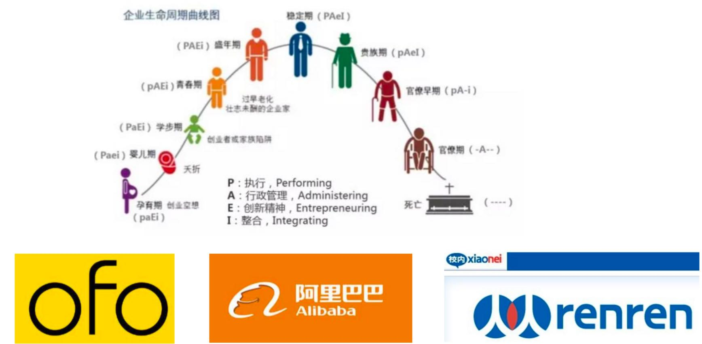
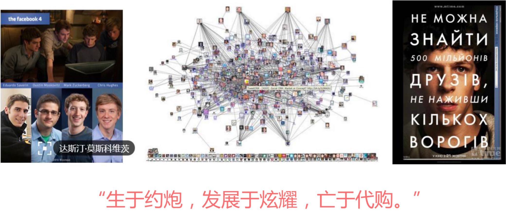
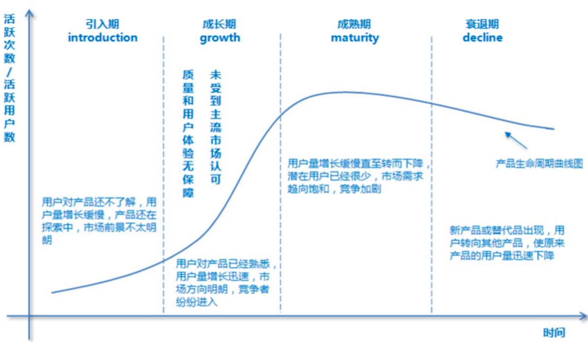
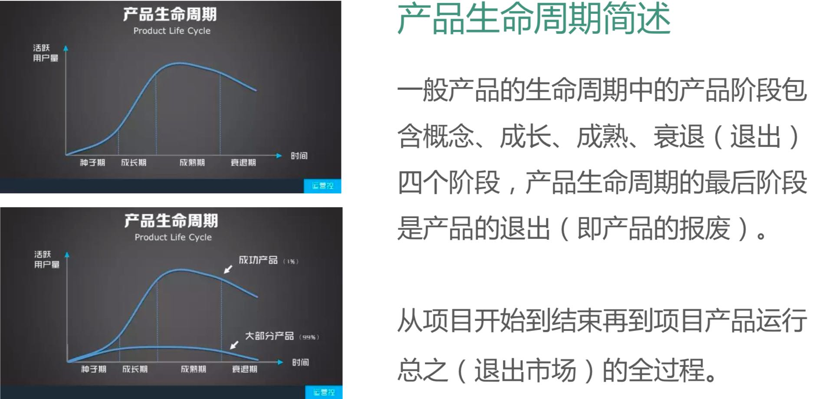

企业也有生命周期



Eg. 社交软件的命运诅咒

早期:社交价值凝练时代，一个理想的社交王国
关键词:清晨 公园 下棋 音乐跳舞 吹牛皮 扎堆 一组完整的社交网络画卷，千百年来，尽管工具平台不同，人们的社交需求从来未变社交APP通过“现实补偿”让人心理平衡，进而上瘾、依赖、离不开;
微博发现名人容易，人人发现校花容易，脉脉发现职场大牛容易。微博上粉丝、转发数、阅读数的设计， 可以清晰量化地展现影响力扩散的过程，高度满足虚荣心;脉脉上影响力和认证系统;社交可以让人获 得高价值的互动体验，满足虚荣心、归属感、表达欲、异性碰撞等心理需求。
中期:社交价值稀释时代，开始陷入运营依赖
我们的社交网络开始装逼开始飞了。伴随着海量用户涌入，原有的SNS规则问题 频出、状况不断，各种漏洞开始被作弊者们巧妙利用，于是段子手、水军、代购 们开始漫天飞舞，社交红利在强大的“噪音”中一点点稀释。
不感冒的信息:能不能不要秀美食了!能不能不要晒小孩了! 低质量的信息:怎天讲创业、天天晾些心灵黑鸡汤! 眼球被营销QJ:还以为加了个美女呢，原来是代购党!拜托，能不能不要发你们组织的二维码了，一天要发几遍啊!
晚期:社交价值流失时代，新的对手取而代之
泡沫总有破碎的那一天，用户增长到达天花板，产品体验到达最低值，运营陷入 全面失控状态，整个信息流中各种垃圾信息横飞。于是，用户开始沉默，开始雪 崩式地逃离，要么50%的声音都不是“真实的个人”发出的。
微博满足了人们的“传播梦”，曾几何时，每个草根都可以让自己的声音快速传播、都可以参与到影响社会进程的公共事件中，在那个时代微博也是人们获取最新资讯的最好途径。然而，渐渐地这个需求不再重要，人们开始关注信息的安全性和私密性，开始关注身边的人，于是微信时代到来了。

理论篇:产品的生命周期


(一)种子期
从产品角度考虑:
产品功能从零到一，满足用户的核心需求，快速上线产品，验证产品模式和方向，小步快跑，不断试错。
“饿了么” 在种子期的核心功能就是通过APP下单， 商家接单，配送人员将外卖送到用户手中。
从运营角度考虑:
找到种子用户，搭建良好的产品氛围，营造良好的产品调性，上线后第一批用户 的行为和氛围会深深影响之后进入的用户。
比如知乎、陌陌等。
从商业模式上考虑:
探索MVP，找到最小的 可行性单位，然后再批量复制。
比如当下的各种020项目，打车软件、团购软 件、共享单车、二手车产品。
最好不要大规模做推广，否则:
1、破坏产品氛围; 2、用户体验不好，留存低; 3、产品服务能力差，口碑不好。
(二)成长期
从产品角度考虑:
产品初具规模，短平快的 打磨产品，不断优化产品的核心功能及相关 模块的产品设计。
从运营角度考虑:
可以进行大规模拉新和推广， 快速占领市场份额，抢占用户，充分利用先发 优势，并且构筑一定的竞争壁垒来阻碍竞争对 手的跟进。
热点推广、活动运营、应用市场推广(ASO)、预安装
从商业模式角度考虑:
关注核心运营数据、销售额、利润，探索盈 利模式。
(三)成熟期
从产品角度考虑:
产品达到一定的用户量级，求稳，细化产品，打造极致的用户体验，产品功能的设计要围绕提高留存、活跃、转化去进行。要不断的延长产品的成熟期，避免早日进入衰退期。可增加积分和社区功能。
从运营角度考虑:
对用户的拉新同样是重点工作，但是要注重促活、留 存、转化等。
从商业模式角度考虑:
更多的考虑商业化、战略卡位和布局。
比如京东、淘宝、微信、百度
(四)衰落期
人有生老病死，产品也有成熟衰落。有的产品进入衰 落期是因为历史大势所趋，历史的车轮滚滚向前，还没反应过来就被大浪淘沙;有的产品衰落是因为自身产品出现问题，我们要通过用户反馈、市场调研、竞品分析去创新产品，必要的时候需要革自己的命，来达到产品的蜕变和升级。